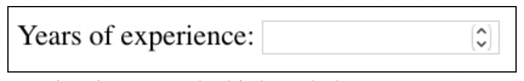
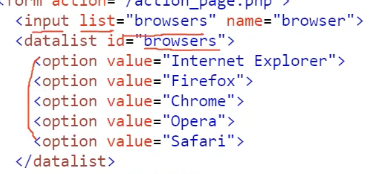

충남대학교 컴퓨터공학과 이규철 교수님의 "웹 프로그래밍" 강의를 필기한 내용입니다.
다소 잘못된 내용과 구어적 표현 이 포함되어 있을 수 있습니다.
HTML
- Hyper Text Markup Language
- Hyper Text 라는 것은 하이퍼 링크를 통해 문서간 이동을 지원한다는 것이고
- Markup Language라는 것은 태그 등을 사용해서 문서의 구조를 지정하는 형식을 의미함
HTML 문서의 구조
DOCTYPE
<!DOCTYPE html>
- 이 문서가 HTML5를 따르는 문서라는 것을 알려줌
html, head, body
<html lang="en-US">
<head>
</head>
<body>
</body>
</html>- 최상위 html태그아래 문서의 정보(메타데이터)를 나타내는 head, 문서의 내용을 나타내는 body 태그로 이루어져 있음
- html 태그의 lang 속성은 문서가 작성된 언어를 나타내며 검색엔진에서 특정 언어어로 된 정보가 필요로 할때, 그리고 시각장애인용 음성지원 등에서 사용한다
Elements
<tag>content</tag>
- 시작태그와 끝 태그(닫는 태그), 그리고 그 안의 내용으로 구성됨
<br>태그같은 몇몇 태그들은 닫는 태그가 없기도 함
Attributes
<tag name="value"></tag>
- Attribute는 Element의 속성을 나타내며
- 속성명=“속성의 값” 의 형태로 나타나게 된다
새로 배운 속성
- alt : img등의 태그에서 콘텐츠를 로드하지 못했을 때 표시할 대체문자. 시각장애인용 음성지원 등으로도 사용된다
- title : tooltip - 마우스를 올렸을 때 띄울 텍스트
- src : 상대주소가 /로 시작하지 않으면 현재 디렉토리를 기준으로 한다는 것을 기억할 것
HTML 태그 몇가지
h1, h2, h3 …
- 문서의 제목, 소제목 등을 나타냄
- 글자 크기를 나타내는 태그가 아니고 제목의 중요도(제목인지, 소제목인지 등등)을 나타내는 것이므로 의미를 생각해서 적용해야 한다
hr
- 화면에 수평선을 그어줌
- 이것도 의미를 생각해서 써야된다 - 문서의 주제가 전환될 때 등에서 사용됨
b, strong, i, em
- b와 strong은 글씨를 굵게하는 공통점이 있지만 b의 경우에는 그냥 bold의 시각적인 효과만 가지는 반면, strong은 강조하는 내용이라는 의미 또한 가지게 된다
- 마찬가지로 i와 em은 글자를 기울인다는 공통점이 있지만 i의 경우에는 italic의 시각적인 효과만 가지는 반면, em은 인용문구라는 의미 또한 가지게 된다
small, mark, del, ins,
small: 작은 텍스크mark: highlighteddel: 삭제되었다는 의미이런 효과ins: 추가되었다는 의미, 밑줄 이런 효과sub: 아래 작게 설명을 위한 텍스트를 보여주는 태그sup: 위에 작게 텍스트를 보여줌
a
- 링크의 상태에 따라 스타일 기본값이 다르다
unvisited: 파란색 글자에 밑줄visited: 보라색 글자에 밑줄active: 클릭되어있는 순간에 빨간색 글자로 보임
- target 속성 : 페이지를 어디에 로드할 것인지 - 대표적으로 다음과 같은 값을 가질 수 있다
_self: 현재의 탭에 띄움_blank: 새로운 탭에 띄움_parent: 상위 프레임에 띄움(iframe과 관련됨)_top: 최상위 프레임에 띄움- iframe의 name값을 넣어줄 수도 있음
- href 값으로 id를 적으면 해당 id의 element로 화면이 움직인다 -
href=“#element-id”이런식으로 적으면 됨
iframe
- 화면 내에 다른 html파일이나 페이지를 띄우는 태그
name=“”으로 프레임의 이름을 지어줄 수 있다
img
- ( img의 width, height속성 ) -> (
<style>태그로 지정해준 스타일 ) -> (<style=“”>속성으로 지정해준 스타일 ) 의 우선순위로 이미지의 크기가 정해진다
table, tr, td, th
<table>
<tr>
<th></th>
</tr>
<tr>
<td></td>
</tr>
</table>- 다음과 같은 구조를 가짐
table: wrappertr: table rowth: table headertd: table data- th의 scope 속성은 해당 헤더가 의미하는 바가 열인지 행인지를 나타낸다 -
scope=“row”는 헤더가 행을 설명하는 것이고,scope=“col”은 열을 설명한다는 것을 나타낸다 - td나 th에
colspan=“숫자”를 넣으면 해당 열만큼 자리를 차지하게 된다 - col이라고 해서 세로방향으로 커지는게 아니다! - 열에 걸쳐 커지는 것 - 마찬가지로
rowspan=“숫자”는 해당 행만큼 자리를 차리한다는 의미이다 - 가로방향으로 커지는게 아니다! - 행에 걸쳐 커지는 것 - 헤더를 묶은 thead와 데이터를 묶은 tbody가 존재하듯이 맨 마지막에 통계 등을 표시하는 tfoot도 존재한다
meta
charset: 문자 인코딩 방식name=“keyword”: 문서의 키워드name=“description”: 문서의 설명name=“author”: 문서의 저자http-equiv=“refresh” content=“30”: 30초마다 새로고침함name=“viewport” content=“width=device-width, initial-scale=1.0”: 문서가 보여질 창의 크기와 배율의 초기값을 지정
base
- a같은 하이퍼링크들에 대한 base를 지정함
<base href="www.google.com" target="_blank">- 위의 예제는 기본 origin 으로
www.google.com을 취하고 페이지가 로드될 기본 모드는_blank이게 된다
form, input, label, select, option
form: 입력 정보들을 감싸는 wrapperaction: 리퀘스트를 어디로 날릴건지target: 서버로부터 받은 응답을 받은 후에 어떻게 할 것인지 - img태그의 target 속성과 동일한 값을 가진다method: GET, POST- GET방식의 param은 글자수 제한이 있기 때문에 url이 너무 길어지면 GET을 쓰지 못한다는 점기억해라
input: 정보 입력용 elementtype: 입력할 정보의 타입(비밀번호, 숫자 등등)radio: 하나만 선택할 수 있음checkbox: 여러개 선택할 수 있음- number일때
step=“숫자”의 속성을 넣어주면 아래 그림처럼 숫자를 클릭으로 바꿀 수 있는 뭐라해야돼 저걸 어쩃든 저게 나온다 - “숫자”는 한번 눌렀을 때 바뀌는 숫자의 크기이다

range는 슬라이더를 만든다. 그리고 min, max 를 통해 슬라이더의 최대최소 값을 지정할 수 있고 step 을 통해 얼마나 빠르게 슬라이더를 움직일 수 있는지 지정해 줄 수 있다name: json의 키에 해당한다고 생각하면 됨value: json의 값에 해당한다고 생각하면 됨 - input태그의 속성으로 value를 지정해주면 input값의 초기값이 된다size: 입력창 크기minlength,maxlength: 입력값 글자 숫자 제한checked: radio나 checkbox의 경우에 기본적으로 선택될 놈required: 반드시 입력해야 하는 항목pattern=“regex”를 통해 입력값을 정규식으로 검토할 수도 있다label: input element에 붙는 제목, 혹은 input을 감싸는 wrapper - for속성을 통해 해당 값을 id로 갖는 input과 연결되거나 label태그의 하위 element로 input태그를 넣어줌으로 연결시킬 수 있음select,option: 옵션 드랍다운multiple: 여러개 입력 가능
textarea: 여러줄의 텍스트를 입력받을 수 있는 기능fieldset,legend: 여러개의 input태그를 의미적으로 묶는 wrapper, legend는 fieldset의 제목을 붙이는 것datalist: input태그의 list 속성값을 datalist태그의 id로 해주면 datalist의 option들 중 하나로 값을 입력하는 것이 가능함(option들의 값이 아닌 것을 입력하는 것도 당연히 가능함)
